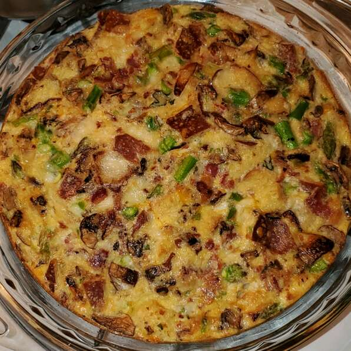

Egg Casserole

Description
Egg Casserole (Egg Bake) is an easy, healthy breakfast casserole that's made with only 9 ingredients (eggs, veggies, bacon, cheese and spices)! It's a healthy, low-carb way to start the day!
Ingredients
-
1 cup shredded Cheddar cheese
-
6 eggs, whisked
-
6 slices bacon, diced
-
2 slices bread, cubed
-
⅓ red bell pepper, diced
-
2 green onions, chopped
-
3 tablespoons milk
-
½ teaspoon minced garlic, or to taste (Optional)
-
salt and ground black pepper to taste
Instructions
-
Preheat oven to 350 degrees F (175 degrees C). Grease a 9x13-inch baking dish.
-
Stir Cheddar cheese, eggs, bacon, bread, red bell pepper, green onion, milk, garlic, salt, and black pepper together in a bowl until well-combined; pour into prepared baking dish.
-
Bake in the preheated oven until eggs are set, 20 to 25 minutes.
Back Home